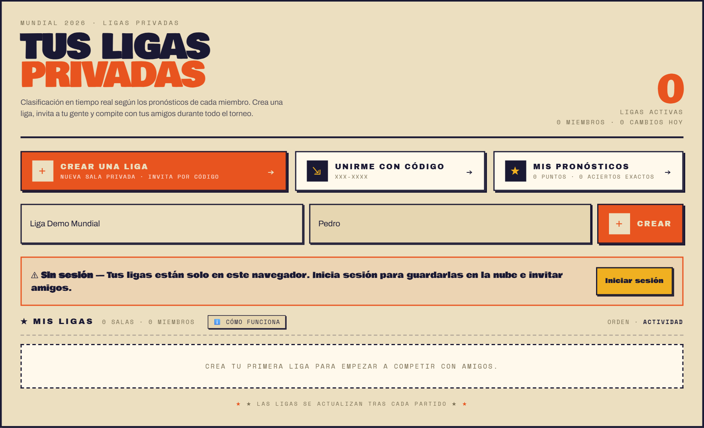
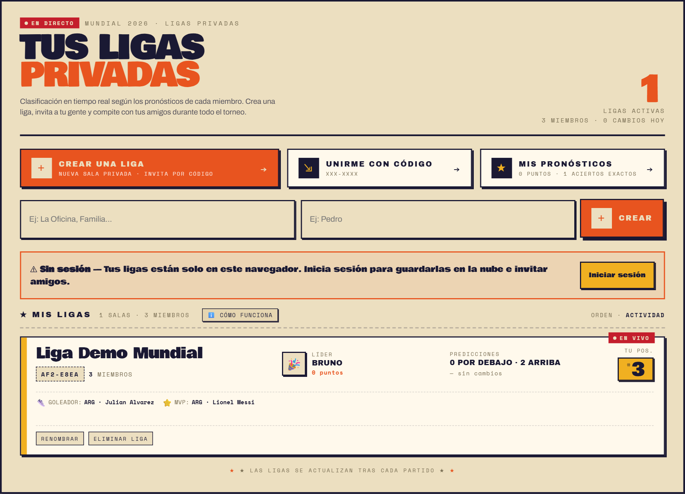
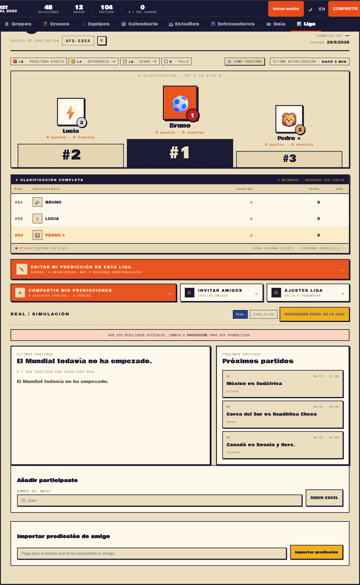
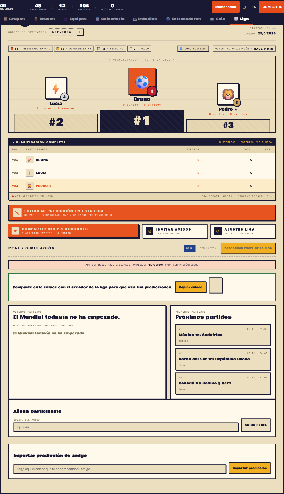
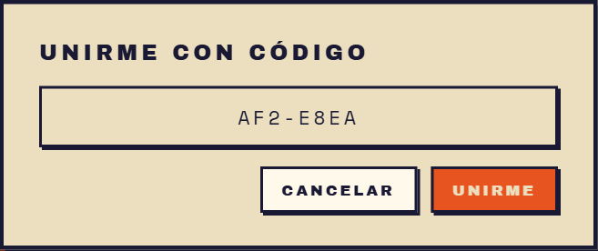

Nuestro bracket interactivo te permite predecir cada resultado, desde la fase de grupos con sus 12 grupos de 4 selecciones, hasta la gran final en el MetLife Stadium.
Puedes simular los cruces, ver quiénes serían los mejores terceros y compartir tu cuadro completo con amigos.
El Mundial de la FIFA 2026 estrena formato con 48 equipos: más partidos (104 en total), una ronda extra de dieciseisavos de final y una emoción sin precedentes.
Sedes repartidas entre Estados Unidos, México y Canadá con 16 estadios oficiales.
Bracket Mundial es una Progressive Web App. Puedes instalarla en tu móvil o escritorio como si fuera una app nativa, con soporte offline y acceso directo desde tu pantalla de inicio.
También disponible en Android e iOS vía Capacitor.
Abre bracket-mundial.vercel.app en cualquier navegador moderno. La app carga de forma instantánea gracias a Vite y Lit Web Components.
La barra de navegación superior permite saltar entre: Inicio Grupos Cruces Equipos Calendario Estadios · Entrenadores.
Haz clic en cualquier partido de la fase de grupos para abrir el modal de edición de marcador. Introduce el resultado y pulsa GUARDAR. La tabla de clasificación se actualiza automáticamente.
Una vez completada la fase de grupos, ve a la pestaña Cruces y pulsa GENERAR ELIMINATORIAS. La app calcula automáticamente los dieciseisavos de final aplicando el reglamento FIFA.
Usa el botón COMPARTIR de la topbar para generar una imagen de tu predicción completa y compartirla en redes sociales o con amigos.
La app guarda tu bracket automáticamente en el navegador. Si cierras la pestaña y vuelves, tu predicción se conserva. Para sincronizarla entre dispositivos, inicia sesión con tu cuenta.
El Mundial 2026 divide las 48 selecciones en 12 grupos de 4 equipos (grupos A–L). Cada equipo disputa 3 partidos dentro de su grupo. Los 2 primeros de cada grupo y los 8 mejores terceros (un total de 32 equipos) avanzan a los dieciseisavos de final.
La vista de Grupos muestra cada grupo con su clasificación en tiempo real: puntos (PTS), diferencia de goles (DG) y partidos jugados. Puedes hacer clic en cualquier partido para editarlo.
Al hacer clic en un partido se abre el modal de edición. Muestra el nombre del estadio, la ciudad, la hora en España (ESP) y los campos de marcador para cada equipo.
Controles: usa los botones ＋/－ para añadir o restar goles. En eliminatorias con empate, se activa el selector de penaltis.
Acciones disponibles: GUARDAR · LIMPIAR · CANCELAR
Con 32 clasificados (24 primeros + segundos de grupos + 8 mejores terceros), el torneo de eliminación directa se compone de 5 rondas:
| Ronda | Nombre | Partidos | Equipos |
|---|---|---|---|
| R32 | Dieciseisavos | 16 | 32 |
| R16 | Octavos | 8 | 16 |
| QF | Cuartos | 4 | 8 |
| SF | Semifinales | 2 | 4 |
| F | Final | 1 | 2 |
En partidos de eliminatoria con empate al final del tiempo reglamentario, debes indicar el equipo ganador por penaltis. La app activa automáticamente el selector de desempate cuando el marcador está igualado.
Ve a la pestaña Cruces y pulsa GENERAR ELIMINATORIAS. El algoritmo aplica el reglamento FIFA para los cruces de los mejores terceros.
Haz clic en cualquier partido del bracket. El modal muestra equipo A vs equipo B con el estadio y horario asignado. Introduce el marcador y penaltis si procede.
Pulsa SIMULAR RESTO para que la app complete automáticamente los partidos pendientes usando las probabilidades de cuotas de apuestas.
En móvil, desliza horizontalmente sobre la sección de eliminatorias para navegar por todas las rondas del bracket.
Muestra el roster completo de cada selección con nombre, posición, club y foto de cada jugador. Marcados como OFICIAL cuando la lista está confirmada por la FIFA.
Filtra y visualiza todos los partidos de esa selección en el torneo: fase de grupos + posibles cruces en eliminatorias. Muestra los partidos pendientes de jugar.
Lista los estadios donde esa selección jugará sus partidos de grupos, con información del recinto, capacidad y ciudad.
Feed de noticias recientes sobre esa selección. Si no hay noticias recientes, se muestra el mensaje "Sin noticias recientes para esta selección."
Las 48 selecciones incluyen equipos de todas las confederaciones. Los datos de plantillas, fotos de jugadores y entrenadores se actualizan en tiempo real desde el backend de Supabase.
La sección de Calendario presenta los 104 partidos del torneo organizados cronológicamente. Incluye filtros por fase, fecha y selección para encontrar rápidamente el partido que buscas.
Cada partido muestra: hora en España (hora local), estadio, ciudad, fase del torneo y el canal de emisión (RTVE / DAZN).
Cuando aún no hay resultado, el partido aparece como PRÓXIMO. Una vez introducido, cambia a PRONÓSTICO.
La app permite exportar el calendario completo en formato iCal (.ics) para importarlo en Google Calendar, Outlook o cualquier app de calendario. El archivo exportado se llama CALENDARIO · MUNDIAL 2026.
La emisión en España se divide entre 33 partidos en abierto por RTVE (todos los partidos de España, semifinales y final) y el resto en exclusiva por DAZN.
MetLife Stadium (Nueva York/Nueva Jersey) será la sede de la gran final. También acogen partidos: AT&T Stadium (Dallas), SoFi Stadium (Los Ángeles), Levi's Stadium (San Francisco), Rose Bowl (Pasadena), Arrowhead Stadium (Kansas City), Hard Rock Stadium (Miami), Lincoln Financial Field (Filadelfia), Gillette Stadium (Boston), Lumen Field (Seattle) y Mercedes-Benz Stadium (Atlanta).
Estadio Azteca (Ciudad de México), Estadio BBVA (Monterrey) y Estadio Akron (Guadalajara). El Azteca se convierte en el primer estadio en albergar partidos de tres Mundiales diferentes (1970, 1986 y 2026).
BC Place (Vancouver) y BMO Field (Toronto). Es la primera vez que Canadá acoge partidos de la Copa del Mundo.
La vista de Estadios incluye ficha completa de cada recinto: foto, capacidad, ciudad, año de construcción y los partidos asignados. Haz clic en cualquier estadio para abrir su modal con toda la información.
Pulsa la pestaña Estadios en la barra de navegación.
Haz clic en cualquier card de estadio para abrir el modal con información detallada y los partidos que se disputarán en ese recinto.
Pulsa ← Volver a estadios para regresar a la vista general de los 16 estadios.
La sección de Entrenadores presenta la ficha de los técnicos de las 48 selecciones participantes. Cada ficha incluye foto, nombre, nacionalidad, selección que dirige y datos relevantes del cuerpo técnico.
Los datos se cargan de forma lazy al acceder a la pestaña por primera vez, optimizando el tiempo de carga inicial de la app.
EXPORTAR JSON: descarga el estado completo de tu bracket como archivo JSON.
IMPORTAR JSON: carga un bracket previamente exportado para restaurar o compartir predicciones entre dispositivos o usuarios.
BAJAR EXCEL: descarga una plantilla .xlsx con todos los partidos del bracket en formato editable.
SUBIR EXCEL: sube un archivo .xlsx con los resultados ya completados para importar toda la predicción de golpe.
Pulsa COMPARTIR para generar una imagen del bracket con tu predicción completa. La tarjeta incluye el campeón, subcampeón y tercer puesto. Lista para compartir en redes sociales.
Crea una liga privada, comparte el enlace de invitación con tus amigos y sigue la clasificación en función de los resultados reales del torneo.
Se recomienda iniciar sesión para compartirla entre dispositivos y usar la sincronización en la nube.
Alterna entre modo día y modo noche con el botón ◑ NOCHE / ◐ DÍA de la topbar. El modo oscuro invierte la paleta manteniendo el diseño retro: fondo azul noche, texto crema.
Cambia el idioma de la interfaz entre español e inglés con el botón EN de la topbar. Toda la UI se traduce en tiempo real sin recargar la página.
Esta es la versión resumida y visual del flujo de ligas privadas dentro del propio manual. Si necesitas más detalle, puedes abrir la guía larga en español o su versión equivalente en inglés.
Flujo recomendado: crear la liga, iniciar sesión, compartir el enlace de invitación, pedir a cada amigo que rellene su bracket y dejar que la clasificación se actualice sola cuando empiecen los partidos reales.
Ve a la pestaña Liga, escribe el nombre de la liga y tu apodo, y pulsa Crear.
Comprueba que la tarjeta de la liga muestra el nombre correcto, su código de invitación y tu posición dentro de la clasificación.
Desde el detalle de la liga puedes ver la clasificación, editar tu predicción, invitar amigos y descargar el Excel de la liga.
Compartir la liga e importar una predicción son acciones distintas. El enlace de invitación mete gente nueva en la liga; el enlace de predicción sirve para trasladar un bracket concreto.
Una vez empiece el torneo, la app recalcula automáticamente la tabla con los resultados reales partido a partido.

La zona superior de Liga concentra los tres accesos clave: crear una liga, unirse con código y revisar tus propios pronósticos. Justo debajo aparecen los campos para nombre de la liga y apodo.
Si todavía no has iniciado sesión, verás un aviso explicando que las ligas se quedarán solo en este navegador hasta que te identifiques.

Cuando la liga ya existe, aparece en la sección Mis ligas con su nombre, el código de invitación, el número de miembros y un resumen rápido del líder actual y de tu posición.
Este bloque es útil para confirmar que la liga ha quedado creada correctamente antes de empezar a invitar personas.

El detalle de la liga es la pantalla central del flujo. Aquí puedes ver el podio, la clasificación completa, el código de invitación, tus acciones principales y la zona de edición o importación de participantes.
También es donde se ve mejor cómo evolucionará la tabla a medida que haya resultados oficiales o simulados.

El botón Compartir mis predicciones no invita a una persona nueva a la liga. Lo que hace es generar un enlace con tu bracket para que el creador, o quien gestione la liga, pueda importarlo.
Es importante distinguir este flujo del botón Invitar amigos, que es el pensado para incorporar participantes nuevos.

La app también permite unirse con código. Es una entrada rápida y clara visualmente: escribes el código y confirmas la unión.
Aun así, para incorporar a una persona por primera vez, el flujo más fiable sigue siendo el enlace de invitación compartido por el creador de la liga.
En España, los derechos de emisión del Mundial 2026 se dividen entre RTVE (abierto) y DAZN (pago).
Paquete Completo (104 partidos): todos los partidos en DAZN y canales habilitados en Movistar Plus+ y Orange TV.
33 partidos en abierto: gratis a través de RTVE (La 1, Teledeporte y RTVE Play). Incluye todos los partidos de España, semifinales y final.
⚠️ Nota: todos los partidos de la Selección Española se emitirán en abierto por RTVE.
La app permite generar y descargar una Guía PDF completa con fichas de equipos, calendario y tu predicción del torneo.
Modo Predicción Automática: genera la guía con resultados simulados por odds de apuestas.
Modo Mi Predicción: usa tu bracket actual (los resultados que tú has introducido) para la predicción de la guía.
Pulsa Imprimir / Guardar PDF o Descargar Guía PDF en la sección Guía.
| Directorio | Contenido |
|---|---|
src/components/ | 19 Web Components Lit (vistas, modales, cards) |
src/data/ | Datos del torneo: equipos, partidos, estadios, jugadores |
src/lib/ | 30 módulos de lógica: bracket, scoring, exports, servicios |
src/store/ | 4 stores Zustand: torneo, auth, ligas, utilidades |
src/i18n/ | Traducciones ES / EN |
src/styles/ | Tokens CSS y estilos compartidos |
android/ ios/ | Proyectos Capacitor para apps nativas |
scripts/ | Scripts de build y generación de datos |
docs/ | Documentación técnica del proyecto |